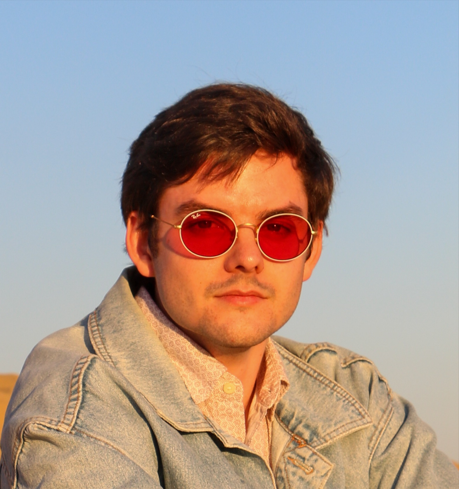

üá¨üáß London, UK
üá´üá∑ I am ü•ñ though üç∑
FULLSTACK DEVELOPER
üá¨üáß London, UK
üá´üá∑ I am ü•ñ though üç∑
Tech Stack
Education

MSc in Transport Planning and Engineering
MSc in Civil Engineering
Projects
Chalkr is a local-first climbing workout tracker built using React Native and SQLite. It aims to help climber analyse their workouts and get insightful data about their training and progress. Chalkr focuses on efficiency and user-friendliness, allowing user to create, view and update routes.

Leveraging the TfL Open API, Velock provides up-to-the-minute availability data for bikes and docking stations across the city. Users can create personalised lists of frequently used stations for quick access. Velock also offers a powerful search, allowing users to locate or discover nearby stations.
Experience

Senior Transport Modeller